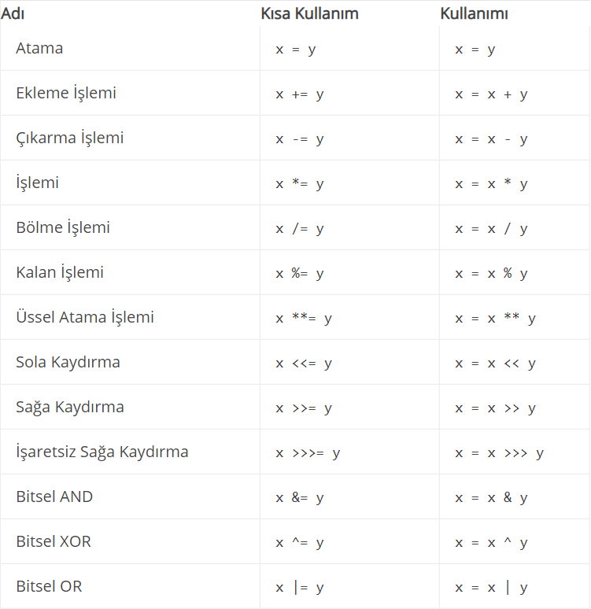
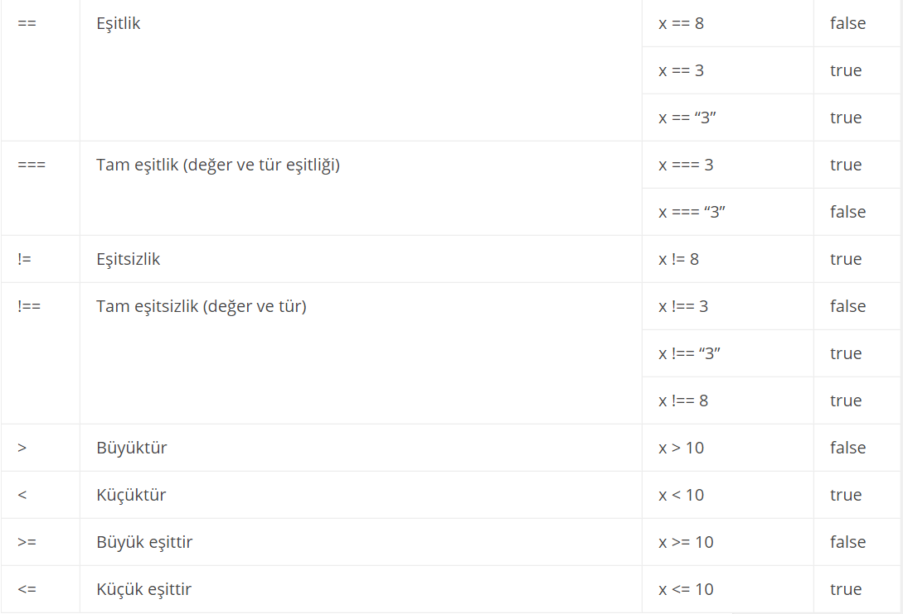

JavaScript programlama dilinde operatörler aşağıdaki gibi gruplandırılabilir. JavaScriptte ikili(binary) , tekli (unary) ve bunlara ek olarak üçlü (ternary) operatörler bulunmaktadır. Operatörlerin ve ifadelerin öncelik sıralamaları da bu konu içinde değerlerlendirilir.
Bir atama operatörü, sağ tarafındaki değere bağlı olarak sol tarafındaki değişkene değer ataması yapar. Basit atama operatörü eşittir(=) sağ tarfındaki değeri sol tarafındaki değişkene atamak için kullanır. Örneğin x=y şeklinde yapılan bir atama işleminde y değişkeni içindeki değeri x değişkenine atama yapmak için kullanılmıştır. Aşağıdaki tabloda atama operatörlerinin bileşik ve kısaltılmış kullanımları gösterilmiştir.
Karşılaştırma operatörleri, değişkenler veya değerler arasındaki eşitliği veya farkı saptamak için mantıksal işlemlerde kullanılır.
JavaScript dilinin çalışma anında tür dönüşümü yapabilme özelliği vardır. Eşitlik operatörü ile eşitliğin iki tarafındaki değer türden bağımsız olarak aynı ise sonuç true değilse false olarak dönmektedir.
Karşılaştırması yapılan iki değer yada değişken arasında türden bağımsız olarak bir birinden farklı ise true değilse bir biri ile aynı ise false dönmektedir.
Karşılaştırması yapılan iki değer yada değişken hem tür hemde değer olarak bir biri ile aynı ise karşılaştırma sonucu true, tür yada değerlerden biri farklı ise false olarak dönmektedir.
Karşılaştırılan veri hem tür hemde değer bakımından bir birinden farklı ise true, iki değerde hem tür hemde değer olarak eşitse false olarak dönmektedir.
Karşılaştırması yapılan iki değerden ilk değer ikinci değerden büyükse true, ikinci değer büyük yada eşitse false sonucunu üretmektedir.
Karşılaştırması yapılan iki değerden ilk değer ikinci değerden büyük yada eşitse true, ikinci değer büyükse false sonucunu üretmektedir.
